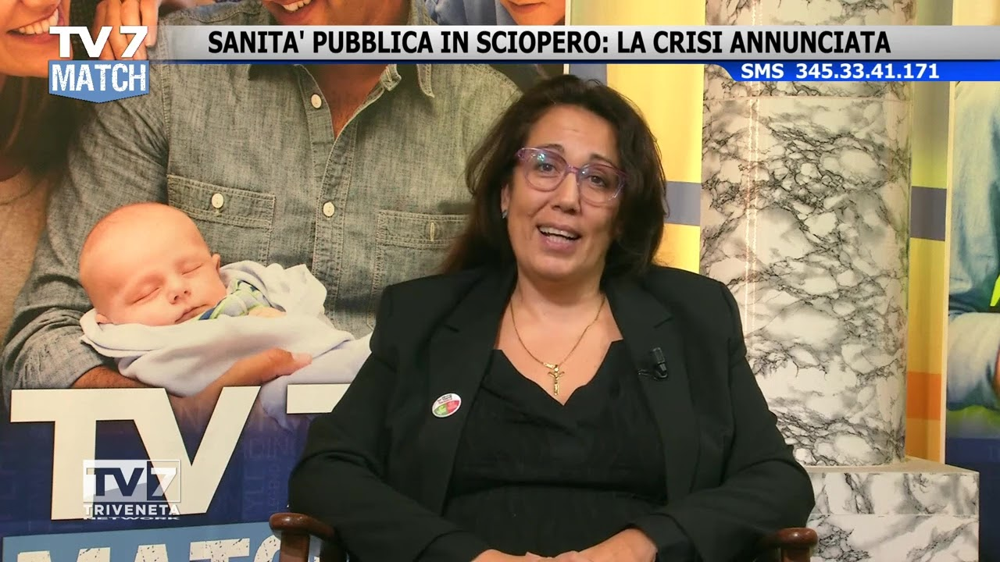

TV7 MATCH · 20 NOVEMBRE 2026
Non siamo missionari.
Siamo professionisti.
In studio per la CISL FP Achille Pagliaro, infermiere dell'Azienda Ospedale-Università di Padova.

Sanità pubblica in sciopero:
la crisi annunciata
▶ GUARDA LA PUNTATA
I numeri della crisi
Emersi in puntata
infermieri ogni 1.000 abitanti in Italia, contro la media europea
-20%
iscritti a Infermieristica in Veneto rispetto al fabbisogno
2026
l'anno «bomba» dei pensionamenti, senza ricambio
300 ore
di straordinario non pagato all'anno per ogni medico del SSN
stanziati per la sanità. Ne servivano 5,5 secondo il Ministro, 6,8 per le Regioni
5,8 mln
di italiani hanno rinunciato a curarsi nel 2024
Dati citati durante la puntata di Tv7 Match del 20 novembre 2026 (OCSE, ISTAT, Ragioneria dello Stato, Conferenza delle Regioni).
Le parole di Achille
Cosa abbiamo detto, per voi
Manca il livello base di investimento sulle professionalità che tengono in piedi il Servizio Sanitario Nazionale.
Il Covid ci ha insegnato che se non abbiamo i soldati, le guerre non possiamo combatterle.
Nel privato accreditato c'è chi ha il contratto fermo da più di 7 anni, mentre le aziende fanno utili da capogiro.
Io stesso, da padre, oggi non consiglierei a mio figlio di fare l'infermiere o il medico. È questo che dobbiamo cambiare.
La sanità pubblica
si regge su di noi.
Ora tocca alla politica.
Noi continuiamo a dirlo ovunque: in reparto, al tavolo con l'Azienda e in televisione.